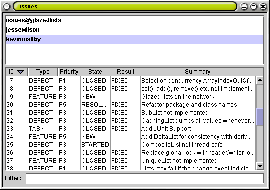

In part four of this tutorial, we compose a list of users derived from the
list of issues. Each issue has a user, so we extract all users from all issues
to form a new list. The derived list is also a EventList so we can apply
filtering and sorting to it in turn. In part five we use our derived users list
to filter for issues belonging to a selected user.
Earlier in the tutorial we discussed how Glazed Lists uses events to
propagate changes to TransformedLists and widgets. Although this had been
significant in understanding how EventLists work, it was
not necessary to interact with the event and listener code directly. In
this stage we create a custom transformation and require some of the event
and listener code in the process.
ListEvents are sophisticated event objects. Each event
notification may contain information on hundreds of inserts, updates and
deletes within a list. To simplify the process, the ListEventAssembler
class assembles and manages ListEvents and their listeners.
The ListEventAssembler has methods addInsert(index),
addUpdate(index) and addDelete(index) to be called
with each list add(), set() and remove(), respectively. Finally it has a pair
of methods beginEvent() and commitEvent() that prepare
for and fire the event to listeners.
Fortunately we only need to create a simple ListEvents. Our
goal is to create a list containing the users for each issue. For example, if
the first element of our issue list contained an Issue object that belonged to
user "jessewilson", then the first element of our users list will simply contain
the element "jessewilson". The size of our users list will be exactly the same
size of the source issues list.
Glazed Lists contains an abstract class to extend just for this purpose called
TransformedList. It manages the list methods and has a protected
ListEventAssembler, updates. We will override the get()
method to return an issue's user instead of the issue itself. We must implement
the listChanged() method to respond to changes in our source
issues list. In our listChanged() method we simply forward an
identical event. This maintains our one-to-one relationship with our source
issues list.
|
Although our issues list contains dozens issues, there are only a
handful of users and each user is responsible for multiple issues.
This means that our users list will contain duplicates. This problem
is solved quickly and easily by UniqueList. Just like
SortedList, the UniqueList uses Comparable
elements or a Comparator to distinguish between elements.
|
Finally we add a JList to our user interface to display the
list of users. In the next part of the tutorial, we will get this widget
to act as a custom filter for the issues table.
|

We have created a list of users that is derived from a list of issues. We then performed a transformation on the derived user list to create a third list whose elements are unique. We have shown an example of how chaining list transformations is an easy way to create a sophisticated user interface.